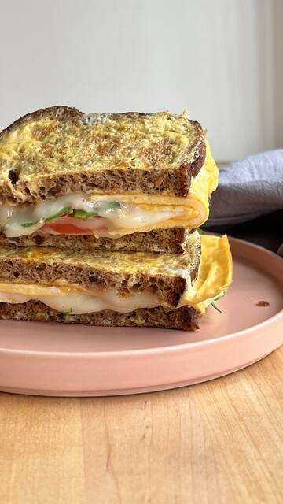
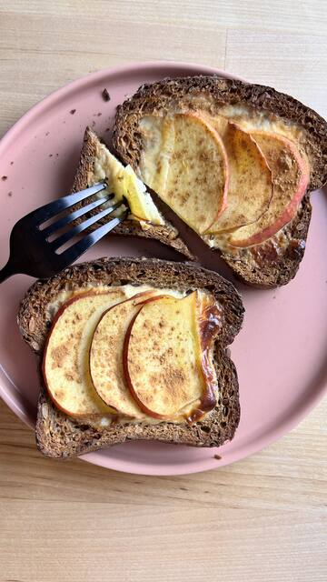
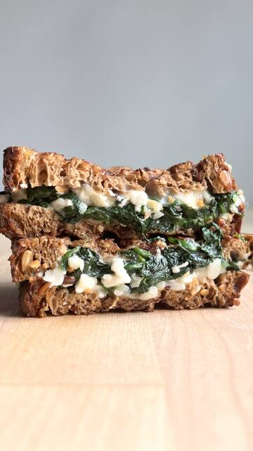

Low Carb
Low Carb

 Índice glucémico testeadoVegano
Índice glucémico testeadoVeganoEl pan que dio origen a Bocado.
El pan que dio origen a Bocado. The Original Protein Bread es un pan de molde elaborado con una mezcla de proteínas vegetales, semillas de lino, girasol y sésamo, que aporta 28 g de proteínas y solo 5 g de hidratos de carbono por cada 100 g. Su miga densa y su sabor a pan de semillas lo hacen perfecto para tostadas, sándwiches y desayunos completos. Es un producto vegano, con alto contenido de fibra (15 g por 100 g), pensado para quienes buscan una alimentación rica en proteínas sin renunciar al pan de todos los días.
Mezcla de proteínas (28%) (proteína de trigo, proteína de soja), granos de soja (21%), linaza (15%), semillas de girasol (9%), harina de soja (6%), harina de trigo integral (6%), salvado de trigo (6%), fibra de manzana (3%), sésamo (2%), sal (2%), harina de malta de cebada (<2%), emulsionante: lecitina de soja (<2%), regulador de acidez: diacetato de sodio (<2%), propionato de calcio, ácido sórbico, agua y levadura.
| Valores medios | Por 100 g |
|---|---|
| Valor energético | 1167 kJ / 279 kcal |
| Grasas | 14 g |
| de las cuales saturadas | 0,4 g |
| Hidratos de carbono | 5 g |
| de los cuales azúcares | 1,2 g |
| Fibra alimentaria | 15 g |
| Proteínas | 28 g |
| Sal | 1,2 g |
Los valores nutricionales están sujetos a las variaciones típicas de los productos naturales.
 VídeoCon The Original Protein Bread
VídeoCon The Original Protein Bread Con The Original Protein Bread
Con The Original Protein Bread Con The Original Protein Bread
Con The Original Protein Bread VídeoCon The Original Protein Bread
VídeoCon The Original Protein Bread
Con The Original Protein Bread
VídeoCon The Original Protein Bread Con The Original Protein Bread
Con The Original Protein Bread
VídeoCon The Original Protein BreadLow Carb

 Low Carb
Low Carb

 Low Carb
Low Carb

 Low Carb
Low Carb